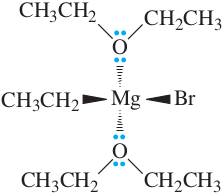
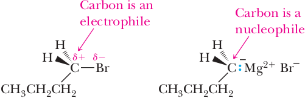

Organomagnesium and organolithium compounds
In this chapter, we undertake our first discussion of a broad class of organic compounds called organometallic compounds, compounds that contain a carbon- metal bond. In recent years, there has been an enormous explosion in our understanding of their chemistry, particularly as stereospecific (and often enanti-oselective) reagents for synthetic chemistry. We have already seen one example in the Sharpless enantioselective epoxidation of alkenes (Section 11.8D). This chapter cannot possibly cover the wealth of organometallic reagents and catalysts that have been developed for synthetic organic chemistry, particularly during the last decade. We focus, therefore, on transformations that are fundamental to synthetic chemistry. Organomagnesium, lithium, and copper reagents have been selected because of their historical importance and their continued use in modern organic synthesis. These reagents are particularly important in the reactions of carbonyl compounds—the focus of the next several chapters. Several more recent reactions of organometallic compounds are discussed in the chapter on C—C bond formation and organic synthesis (Chapter 24).
We begin with organomagnesium and organolithium compounds and concentrate on their formation and basicity. We discuss their use in organic synthesis in more detail in later chapters, particularly in Chapters 16 and 18.
| RMgX An organomagnesium compound (a Grignard reagent) | RLi An organolithium compound |
Formation and Structure
Organomagnesium compounds are among the most readily available, easily prepared, and easily handled organometallics. They are commonly named Grignard reagents after the French chemist Victor Grignard (1871–1935), who was awarded the 1912 Nobel Prize for chemistry for their discovery and application to organic synthesis.
Grignard reagents are typically prepared by the slow addition of an alkyl, aryl, or alkenyl (vinylic) halide to a stirred suspension of a slight excess of magnesium metal in an ether solvent, most commonly diethyl ether or tetrahydrofuran (THF). Organic iodides and bromides generally react very rapidly under these conditions, whereas most organic chlorides react more slowly. Bromides are the most common starting materials for preparation of Grignard reagents. It is common to use the higher-boiling THF (bp 67°C) to prepare Grignard reagents from the less reactive organic halides. Generally there is an induction period at the beginning of the reaction caused by the presence of traces of moisture and a thin oxide coating on the surface of the magnesium. When reaction starts, it is exothermic, and the remaining organic halide is added at a rate suffi cient to maintain a gentle reflux of the ether.
Butylmagnesium bromide, for example, is prepared by treating 1-bromobutane in diethyl ether with magnesium metal. Aryl Grignard reagents, such as phenylmagnesium bromide, are prepared in the same manner. These reactions are referred to as oxidative additions, because they result in an increase in the formal oxidation state of magnesium by two, that is, from Mg(0) to Mg(II).
| CH3CH2CH2CH2Br | + | Mg | Ether ⟶ | CH3CH2CH2CH2MgBr |
| 1-Bromobutane | Butylmagnesium bromide (an alkyl Grignard reagent) | |||
| Ph—Br | + Mg | Ether ⟶ | Ph—MgBr | |
| Bromobenzene | Phenylmagnesium bromide (an aryl Grignard reagent) |
Although the equation for formation of Grignard reagents looks simple, the mechanism is considerably more complicated and involves radicals. We have no need in this course to discuss the mechanism for their formation. However, we note that for many Grignard reagents there is an equilibrium between monoalkyl and dialkyl magnesium complexes as shown:
| 2RMgX | ⇌ | R2Mg | + | MgX2 |
Grignard reagents form on the surface of the metal and dissolve as coordina- tion complexes solvated by ether. In this ether-soluble complex, magnesium acts as a Lewis acid, and the ether acts as a Lewis base (Figure 15.1).
Organolithium reagents are prepared by treating an alkyl, aryl, or alkenyl halide with two equivalents of lithium metal, as illustrated by the preparation of butyllithium. In this reaction, a solution of 1-chlorobutane in pentane is added to lithium wire at –10°C.
| CH3CH2CH2CH2Br | + | 2Li | pentane ⟶ | CH3CH2CH2CH2Li |
| 1-Chlorobutane | Butyllithium |
Organolithium compounds are very reactive as nucleophiles in carbonyl addition reactions even at very low temperatures. They are also powerful and effective bases. For these reasons, they are now widely used in modern synthetic chemistry. However, they react rapidly with atmospheric oxygen and moisture and, therefore, must be used under an inert atmosphere of N2 or Ar, which decreases their convenience.
The carbon-metal bonds in Grignard and organolithium reagents are best described as polar covalent, with carbon bearing a partial negative charge and the metal bearing a partial positive charge. In their reactions, Grignard and organolithium reagents behave as carbanions, which are ions in which carbon has an unshared pair of electrons and bears a negative charge. Shown in Table 1.0 are electronegativity differences (Pauling scale, Table 1.5) between carbon and various metals. From this difference, we can estimate the percent ionic character of each carbon-metal bond.
| δ–δ+ C–M Bond | Difference in Electronegativity | Percent Ionic Character (EC – EM)/EC x 100 |
|---|---|---|
| C–Li | 2.5 – 1.0 = 1.5 | 60 |
| C–Mg | 2.5 – 1.2 = 1.3 | 52 |
| C–Al | 2.5 – 1.5 = 1.0 | 40 |
| C–Zn | 2.5 – 1.6 = 0.9 | 36 |
| C–Sn | 2.5 – 1.8 = 0.7 | 28 |
| C–Cu | 2.5 – 1.9 = 0.6 | 24 |
| C–Hg | 2.5 – 1.9 = 0.6 | 24 |
Organolithium and organomagnesium bonds have the highest partial ionic character, whereas those of organocopper and organomercury compounds are lower. These compounds do not behave as salts. Organolithium reagents, for example, which have the highest percent partial ionic character, dissolve in non-polar hydrocarbon solvents such as pentane because they self-assemble into well-ordered aggregates, (RLi)x that present a nonpolar surface to the surrounding solvent. An important aspect of the metals listed in Table 1.0 is that they all have electronegativities that are considerably lower than carbon. This means that the polarity of the carbon-metal bond places a partial negative charge on carbon and a partial positive charge on the metal. The partial negative charge makes the carbon atom both basic and nucleophilic. When Grignard and organolithium reagents are prepared, the carbon atom bearing the halogen is transformed from an electrophilic center (partial positive charge) in the haloalkane, alkene, or arene to a nucleophilic center (partial negative charge) in the organometallic compound. In the structural formula of butylmagnesium bromide on the right, the carbon-magnesium bond is shown as ionic to emphasize its nucleophilic character.
As nucleophiles, these compounds react with the electrophilic carbon atom of the carbonyl groups of aldehydes and ketones (Chapter 16) and of carboxylic esters and acid chlorides (Chapter 18). Herein lies the value of organomagnesium and organolithium reagents in synthetic organic chemistry—as carbon-centered nucleophiles, they enable the formation of new carbon-carbon bonds.
Reaction with Proton Acids
Both Grignard and organolithium compounds are very strong bases and react readily with any acid (proton donor) stronger than the alkane from which they are derived. Ethylmagnesium bromide, for example, reacts instantly with water, which donates a proton to give ethane and magnesium salts. This reaction is an example of a much stronger acid and a much stronger base reacting to give a weaker acid and a weaker base (Section 4.4). Ethane is evolved from the reaction mixture as a gas.
| CH3CH2–MgBr | + H–OH | ⟶ | CH3CH2–H | + Mg2+ | + OH− | + Br− | pKeq = –35 Keq = 1035 |
| Stronger base | pKa 15.7 Stronger acid | pKa 51 Weaker acid | Weaker base |
Following are several classes of proton donors that react readily with Grignard and organolithium reagents. Because they react so readily with these types of compounds, Grignard and organolithium compounds cannot be prepared from any organohalogen that also contains one of these functional groups. Nor can they be prepared from any organohalogen compound that also contains a nitro or carbonyl group because they also react with these groups.
| R2NH | RC≡CH | ROH | HOH | ArOH | RSH | RCOOH |
| pKa 38–40 1° and 2° amines | pKa 25 Terminal alkynes | pKa 16–18 Alcohols | pKa 15.7 Water | pKa 9–10 Phenols | pKa 8–9 Thiols | pKa 4–5 Carboxylic acids |
Reaction with Oxiranes
As we saw in Section 11.9, the oxirane ring is so strained that it undergoes ring-opening reactions with a variety of nucleophiles. We can now add Grignard and organolithium reagents to the list of reactive nucleophiles. Butylmagnesium bromide, for example, reacts with oxirane (ethylene oxide) to give a magnesium alkoxide, which, on treatment with aqueous acid, gives 1-hexanol.
| ⟶ | CH3CH2CH2CH2CH2CH2O−MgBr+ | HCl ⟶ H2O |  | |
| Butylmagnesium bromide + Ethylene oxide | A mangesium alkoxide | 1-Hexanol |
As illustrated in this example, the product of treatment of a Grignard reagent with oxirane followed by protonation of the alkoxide is a primary alcohol with a carbon chain two carbons longer than the original chain. In reaction of a substituted oxirane, the major product corresponds to attack of the Grignard reagent on the less hindered carbon of the three-membered ring in an SN2-like reaction. Treatment of racemic methyloxirane (propylene oxide) with phenylmagnesium bromide, for example, followed by workup in aqueous acid gives racemic 1-phenyl-2-propanol. The reaction does not work well if one or more of the oxirane carbons is quaternary.
| ⟶ | Ph—CH2—(CH)—O−MgBr+ | HCl ⟶ H2O | ||
| Phenylmagnesium bromide + Methyloxirane (Propylene oxide) (racemic) | A magnesium alkoxide (racemic) | 1-Phenyl-2-propanol (racemic) |